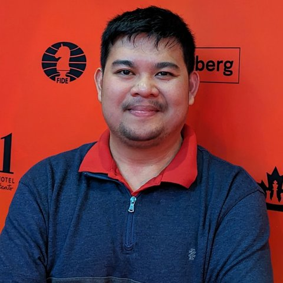

The Art of Practical Threat Modelling
Ralph Andalis
A full-day, hands-on training in practical application threat modelling. Separate paid ticket, limited to 30 places. You don’t need a BSides ticket to attend.
Price
- $120 AUD + GST (early bird price, limited)
- $150 AUD + GST (regular admission)
What’s included
- 8-hours full day hands-on training
- Training materials (slides and practice materials)
Prerequisites
- Know the Threat Modelling basics
- Understand security issues and threats on software systems, applications and networks
- Ideally knows at least STRIDE & DREAD and its basics
Trainer

Ralph Andalis
Ralph is the Director of Security & Founder of Gridlock Security (GridlockSec), a company that focuses on cybersecurity consulting services. He has 11 years experience in the industry as a Security Consultant/Pentester/Security Researcher. His expertise is mainly Web, Mobile, and Network Pentesting, Threat Modelling, Security Architecture Review, and Security Design Reviews. He recently worked at Microsoft as a Senior Security Engineer handling solely the product security of his assigned product for all his 130+ Software Engineers.
He is also a major active contributor and a member of the working group for the OWASP Application Security Verification Standard (ASVS) project, making the standard better for fellow pentesters and developers alike. Recently, he started helping on OWASP Artificial Intelligence Security Verification Standard (AISVS) to help address the AI-security needs of the global community and open-source standards.
He trained attendees at BSides Vancouver 2025, BSides Orlando 2025, BSides Luxembourg 2026, OWASP AppSec New Zealand Days 2026 for similar earlier versions of Threat Modelling Trainings which had been well received. He has presented his talk as well on OWASP AppSec Pacific Northwest conference (PNW) 2024 in Vancouver, BC Canada and HackStop Cybersecurity Summit 2024 in Ljubljana, Slovenia.